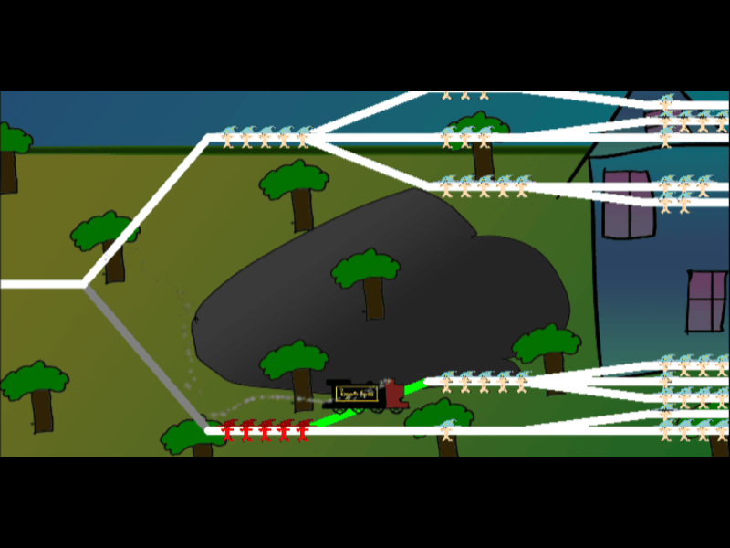

TND Card Game

This is a 1v1 card game with online multiplayer with over 30 unique cards. Includes a functional deckbuilder and the ability to easily import and export decklists. Connect with other players by entering a code such as "ABCD" and clicking host, and then have them enter the same code and click connect.
TND Launcher Download
Polygon Paradise
Description of Project 2.
Minimize Loss

This is a simple minigame that I helped make for the EGaDS Mega Micro Jam 2022.
This game is a take on the famous Trolley Problem with the goal being to save as many people as possible by quickly choosing the path with the least people.
Play in Browser (Loud Sound Warning)
Combined Game Jam Link
Project 3
Description of Project 2.